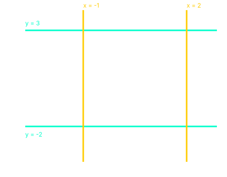
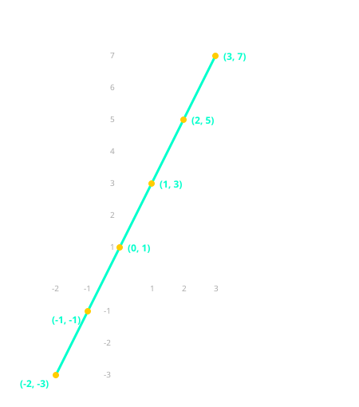
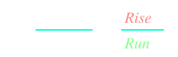
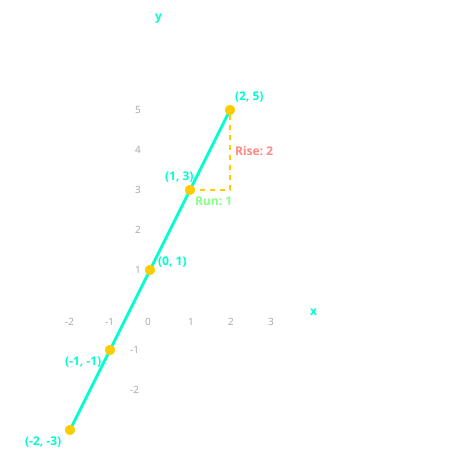
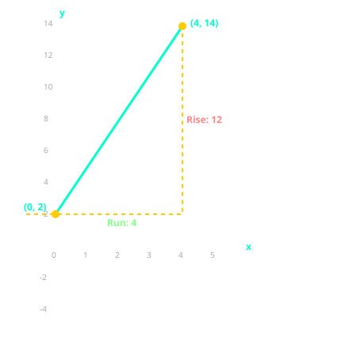

Linear Equations and Graphs
A linear equation is an equation whose graph is a straight line. Linear equations are used to model relationships where one quantity changes at a constant rate relative to another, such as distance over time, cost of items, or temperature conversion.
Before You Begin: Make sure you have reviewed our Rates of Change page, especially the section on direct proportion. Understanding how to plot points on a coordinate plane is also essential.
The Coordinate Plane
The coordinate plane (also called the Cartesian plane) has two perpendicular axes: the x-axis (horizontal) and the y-axis (vertical). Any point on the plane can be described using an ordered pair (x, y), where:
- x is the horizontal distance from the origin (0,0)
- y is the vertical distance from the origin

Horizontal and Vertical Lines
The simplest types of lines are those that are parallel to the axes.
Horizontal Lines (Parallel to the x-axis)
A horizontal line has the same y-coordinate for every point. Its equation is y = c, where c is the y-intercept.
Vertical Lines (Parallel to the y-axis)
A vertical line has the same x-coordinate for every point. Its equation is x = k, where k is the x-intercept.

Consider the lines, y = 3 and and x = -1.
To draw the lines y = 3 and x = -1 on the same coordinate plane, follow these steps.
Step 1: For y = 3, draw a horizontal line through all points where y = 3.
This line is parallel to the x-axis and crosses the y-axis at (0, 3).
Step 2: For x = -1, draw a vertical line through all points where x = -1.
This line is parallel to the y-axis and crosses the x-axis at (-1, 0).
Equations of Lines Parallel to Axes
Writing Equations from Graphs
Write the equations of the lines shown on the graph.
Step 1: Identify the horizontal line. It passes through y = -1 at all points.
Equation: y = -1
Step 2: Identify the vertical line. It passes through x = 4 at all points.
Equation: x = 4
Answer: The equations are y = -1 and x = 4.
Key Rules:
• Any horizontal line has equation y = c
• Any vertical line has equation x = k
• The line y = 0 is the x-axis
• The line x = 0 is the y-axis
Calculating Coordinates from Equations
To draw the graph of a linear equation, you need to find points (coordinates) that satisfy the equation. Choose x-values, substitute them into the equation, and calculate the corresponding y-values.
Finding Coordinates from y = 2x + 1
For the equation y = 2x + 1, find the y-values when x = -2, 0, and 3.
Step 1: When x = -2
y = 2(-2) + 1 = -4 + 1 = -3
Coordinate: (-2, -3)
Step 2: When x = 0
y = 2(0) + 1 = 0 + 1 = 1
Coordinate: (0, 1)
Step 3: When x = 3
y = 2(3) + 1 = 6 + 1 = 7
Coordinate: (3, 7)
Answer: The coordinates are (-2, -3), (0, 1), and (3, 7).
Tip: Choose x-values that are easy to work with, such as -2, -1, 0, 1, 2. This makes calculations simpler.
Drawing Linear Graphs
To draw the graph of a linear equation, follow these steps:
- Choose at least three x-values
- Calculate the corresponding y-values
- Plot the points on the coordinate plane
- Join the points with a straight line
Drawing the Graph of y = 2x + 1
Draw the graph of y = 2x + 1 for x-values from -2 to 3.
Step 1: Create a table of values.
| x | y = 2x + 1 | Point |
|---|---|---|
| -2 | -3 | (-2, -3) |
| -1 | -1 | (-1, -1) |
| 0 | 1 | (0, 1) |
| 1 | 3 | (1, 3) |
| 2 | 5 | (2, 5) |
| 3 | 7 | (3, 7) |
Step 2: Plot the points and join them with a straight line.

Gradient and y-intercept
Every straight line (except vertical lines) has two important features:
The Gradient (Slope)
The gradient tells you how steep the line is. It is the rate at which y changes as x increases. A positive gradient means the line slopes upward. A negative gradient means the line slopes downward.
The formula for gradient is:

"Rise over Run" is the easiest way to remember that the vertical change (y) goes on top and the horizontal change (x) goes on the bottom. Rise means how far up or down along the y-axis, while Run means how far left or right along the x-axis.

Gradient and y-intercept
Every straight line (except vertical lines) has two important features: the gradient (how steep the line is) and the y-intercept (where the line crosses the y-axis).
The y-intercept
The y-intercept is the point where the line crosses the y-axis. This occurs when x = 0. In the equation y = mx + c, the y-intercept is represented by c.
The Gradient (Slope)
The gradient tells you how steep the line is. It is the rate at which y changes as x increases.
"Rise over Run" is the easiest way to remember the gradient formula. The vertical change (y) goes on top, and the horizontal change (x) goes on the bottom.

Finding Gradient and y-intercept from a Graph
Use the graph below to find the gradient and y-intercept of the line.

Step 1: Find the y-intercept.
The line crosses the vertical axis at (0, 1). Therefore, c = 1.
Step 2: Identify two points.
We will use A(1, 3) and B(2, 5).
Step 3: Calculate the Gradient (m).
Step 4: Write the equation.
Plugging m = 2 and c = 1 into y = mx + c gives:
y = 2x + 1
Key Rules for Gradient:
• A line sloping upward to the right has a positive gradient
• A line sloping downward to the right has a negative gradient
• A horizontal line (flat) has a gradient of 0
• A vertical line has an undefined gradient (cannot be calculated)
• The steeper the line, the larger the absolute value of the gradient
Equation of a Straight Line (y = mx + c)
The equation of any non-vertical straight line can be written in the form:
y = mx + c
Where:
- m is the gradient
- c is the y-intercept
Finding the Equation from a Graph
A straight line passes through (0, 2) and (4, 12). Find its equation.

Step 1: Find the gradient.

Step 2: Identify the y-intercept.
The line passes through (0, 2), so c = 2.
Step 3: Write the equation.
Substitute m = 3 and c = 2 into y = mx + c
y = 2x + 2
Answer: y = 3x + 2
NB: When drawing linear graphs, always use at least three points to ensure accuracy. The gradient m tells you how steep the line is. A positive m means the line slopes upward. A negative m means the line slopes downward. The y-intercept c tells you where the line crosses the y-axis.
Summary Table: Linear Equations
| Type of Line | Equation | Gradient | Example |
|---|---|---|---|
| Horizontal line | y = c | 0 | y = 3 |
| Vertical line | x = k | Undefined | x = -2 |
| Sloping line | y = mx + c | m | y = 2x + 1 |